Semantic Segmentation Overview
2019, Mar 19
# Semantic Segmentation Overview
| 结构 | 名字 | Pascal VOC 2012 |
|---|---|---|
| Encoder-Decoder | FCN | 67.2 |
| Encoder-Decoder | SegNet | 59.9 |
| Encoder-Decoder | RefineNet | 82.4 MS+CRF+CocoTrn |
| Dilated Conv | DilatedNet | 73.9 RNN+CocoTrn |
| Dilated Conv | PSPNet | 85.4 MS+CoCoPre |
| Encoder-Decoder | Large Kernel | 82.2 MS+CRF+CoCoPre |
| Dilated Conv | DeepLab-V2 | 79.7 MS+CRF+CoCoPre |
| Dilated Conv | DeepLab-V3 | 86.9 MS+CoCoPre+JFT |
| Dilated Conv + Encoder-Decoder | DeepLab-V3+ | 89.0 MS+CoCoPre+JFT |
FCN 全卷积神经网络
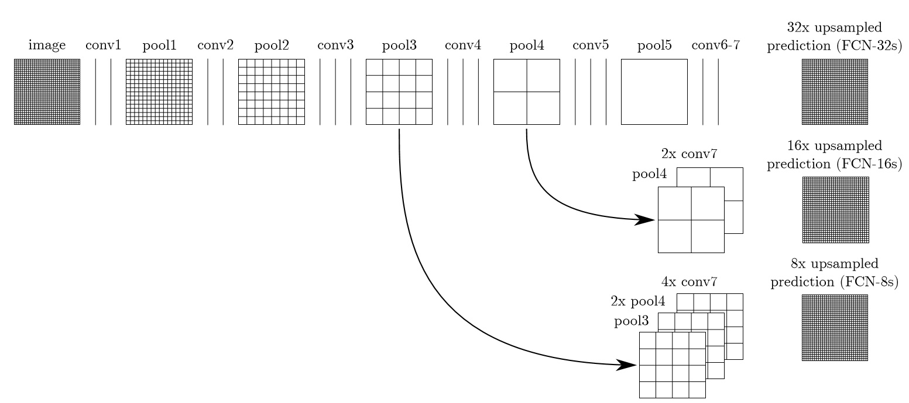
主要特点
- 引入卷积代替全连接，生成热点图
- Encoder-Decoder 结构
- 对各层feature map 双线性插值上采样， 用skip connection连接至后层trans_conv后的feature map
存在的问题
- 对于尺寸小于192的照片， 直接暴力在两侧添加100个像素， 存在问题。
- 作者在实验中提到，无论定死/学习trans_conv kernels，性能无明显变化
SegNet
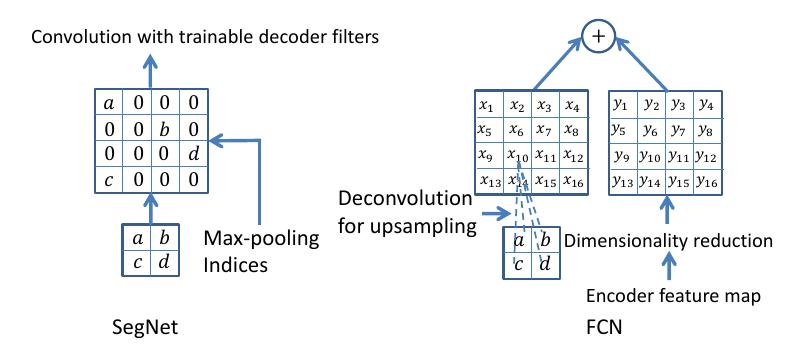
主要特点
- 在FCN的基础上，取消直接add的skip connection，而是记录pool时的具体indices, 按照对应位置上采样为稀疏feature_map，再对此map作正常卷积.
- 在使用上述策略的情况下，再加上FCN的skip connection会更好（+1%）
RefineNet
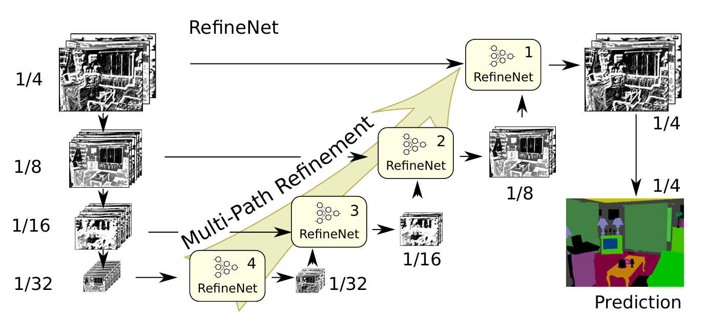 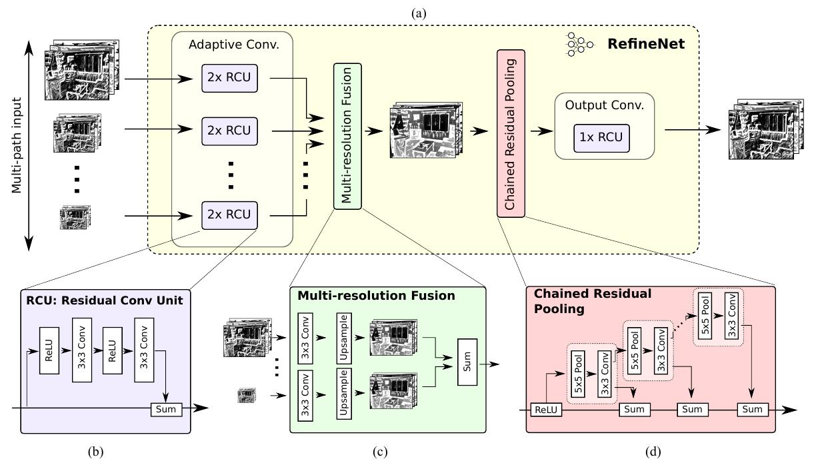
主要特点
- encoder-decoder 结构, 提供一种向上fusion的思路
- 全部使用参差连接的思想
Multi-Scale Context Aggregation by Dilated Convolutions
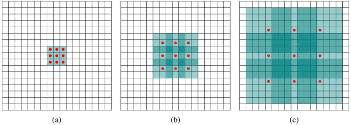
主要特点
- frontend module: 将传统VGG的后两层换为带孔卷积
- 带孔卷积可以任意调整感受野的增加速率， 同时也保持spatial resolution不变 （stride=[1,1], kernel相同的常规卷积，尽管其也具有保持resolution的性质， 但是其感受野增长速率受限（R += k-1 * j’, j = j’），达到同样效果需要多层堆叠！）
- contextend module： 将frontend module的输出换为输入， 用级联的不同孔大小的带孔卷积来聚合多尺度特征(+2%)
注意之处
frontend-module从第三个pool之后，才替换为带孔卷积，因此最终输出认为 1/8 大小的segmentation map, 需要插值来获得最终的分割结果。
PSPNet
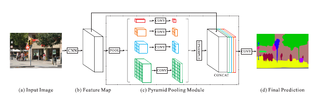
对dilated-FCN作error-analysis, 发现其error有不匹配的目标对(e.g.车在水上)、容易混淆的类、小尺寸目标等. 有些错误源自于缺乏contextual information，遂采用此feature pyramid之招数
主要特点
- 第一阶段是resnet-50 + 带孔卷积得到 1/ 8 size的feature map
- 用如图的pool策略， 取得不同VALID RF的背景表达， 对这些表达作卷积，压缩channel至 1/N, 再上采样以concat
- 采用auxiliary loss, 对res4b_22（i.e. 图中a的输出）的feature map上叠加一个分类器作输出
- 不需要CRF作后处理！
存在问题
【待考证】无法复现至类似精度
Large Kernel Matters
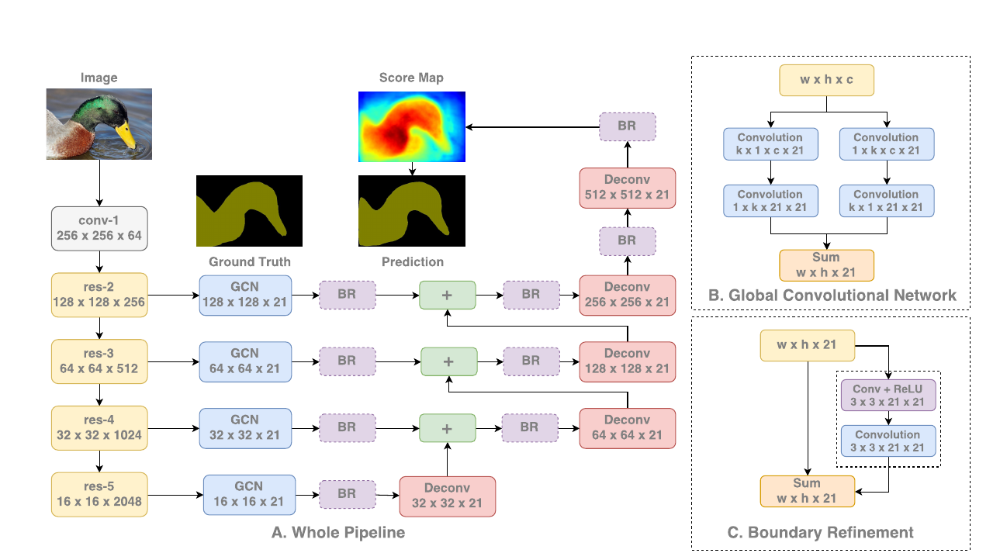
主要特点
- 提出了分类&定位为矛盾任务的思想， 认为小Valid RF的分类问题是困难的，需要更大的RF和更加稠密的连接（【待考证】对transformation更robust）。故而用更大的kernel来增加valid RF和连接。
- 做了实验发现模型在object内部准确率高(94%)， 在边界附近准确率低(71.3%)【启发性】, 大kernel可以将内部准确率提高1%， 边界维持不变。将边界定位问题认为是一个参差结构（BR模块）可以+2%的边界准确率 【启示：边缘attention？】
- 考虑计算效率，将大kernel [k,k], 分解为 [1，k] [k,1] 和 [k,1], [1.k] 并联, 每一组间无nonlinearity , 可视作对大kernel的正则， 在ablation study中outperform了直接[k,k]， 和堆叠的小卷积.
DeepLab V1 & V2
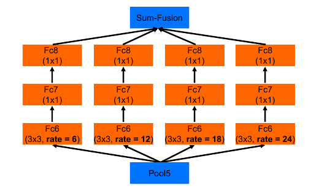
主要特点
- V2 比起 V1 将backbone换成了resnet(+2%)
- V2 用ASPP作多尺度聚合 +0.8%
- 最后一层使用更大的rate=12的带孔卷积证明有效 +0.6%
- DenseCRF：传统short-range CRF可以用来消除分割图中毛刺的部分， 但是在DCNN产生的分割图中，分割图本身已经比较光滑，因此我们更加希望CRF可以帮助回复局部的结构，而不是光滑分割图.
DeepLab V3
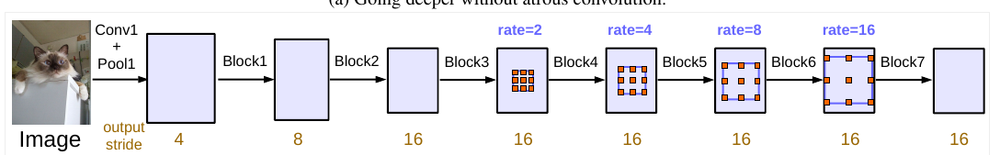 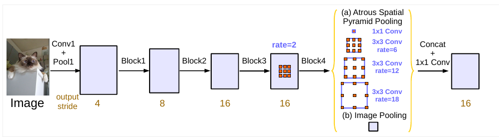
主要特点
- 修改resnet block结构， 提出Multi-Grid, 在一个block中的三个conv采用不同的dilated rate
- include image-level feature(GAP) in ASPP[+0.6%], ASPP去掉rate=24(+0.12%)(作者认为rate=24时，valid filter太少), 加入[1,1] conv 作 channel reduction
- 训练时用了所谓的【bootstraping】学习策略， 重复那些很少出现的类的训练 +2%
DeepLab V3+
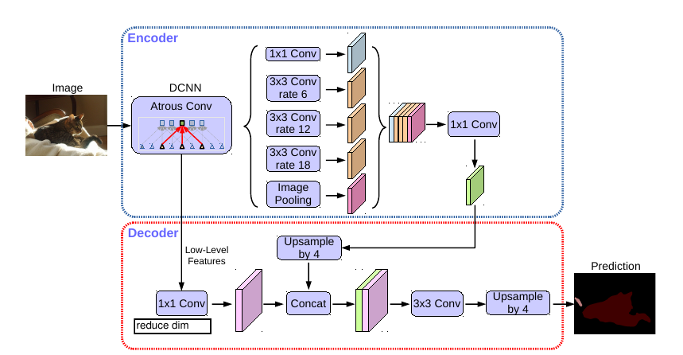
主要特点
- 将backbone网络由resnet 换成Xception， 将所有pooling层换成了depthwise convolution with striding.
- 引入了一个Decoder结构，用x4 feature map作concat。【启发：使用更多layer 不同scale 的feature据作者报告没有带来性能提升】